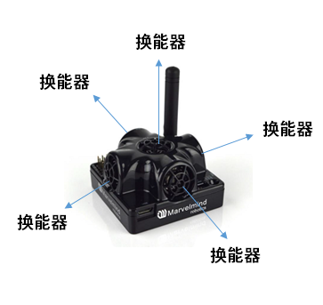

定位系统¶
产品概要¶
定位系统能够为机器人、自动驾驶车辆、无人机等设备提供 ±2cm 的定位精度。定位系统包含一个由多个固定超声标签构成的基站网络（地图），一个或多个安装在被定位物体上的移动标签和协调整个系统工作的中心路由节点，所有设备之间通过无线电通信。

系统通过超声脉冲的飞行时间计算移动标签与固定标签的距离，进而利用三边定位算法计算出移动标签在地图中的位置。固定标签之间也能通过超声测距，因此在合理布置固定标签的情况下，系统能够实现自动建图，避免人工测量距离。
 入门套件
入门套件
参数列表¶
| 参数 | 技术指标 |
|---|---|
| 标签距离 | 30m (理想情况下测试结果) |
| <20m (常规建图定位建议距离) | |
| 定位精度 | 绝对精度：距离的1~3% |
| 差分精度：±2cm | |
| 定位频率 | 1/20Hz ~ 45Hz |
| 与移动标签到固定标签的距离有关（距离越近频率越高） | |
| 与移动标签的数量有关（数量越多频率越低） | |
| 供电 | 内部：1000mAh 锂电池（根据使用情况可续航2天到数月） |
| 外部：USB供电 | |
| 尺寸 | 55 x 55 x 33 mm（含天线：55 x 55 x 65 mm） |
设备介绍¶
定位标签¶
beacon
一个定位标签包含5个超声波换能器，收发各个方向的超声信号。一个标签可以作为固定标签也可作为移动标签使用，通过 Dashboard 修改配置可以很方便使二者互换。
固定标签通常被安装在墙上或者天花板上，并且换能器朝下以提供与机器人尽可能大的无遮挡覆盖区域。
应该合理设计固定标签的位置和角度以提供最大的超声信号覆盖范围，系统的定位效果非常依赖固定标签收到的超声信号的质量。
建图过程中，固定标签发射并接收超声波信号。地图锁定后定位过程中，固定标签只接收超声波信号，移动标签只发送超声波信号。
移动标签放置在被定位对象上，为了尽可能避免遮挡提高覆盖范围，应该水平放置在较高处。任何覆盖物都可能降低超声信号的强度导致系统不能正常工作，因此应完全避免标签换能器被覆盖。
路由¶
 beacon
beacon
路由是整个定位系统的中心控制器，系统工作时路由必须一直在线。注意路由没有内置电池，只能使用USB供电。
路由的放置位置需要保证无线电信号覆盖所有标签，一般情况下使用默认的天线时能够达到100m 的覆盖半径。降低无线电通信速率并且使用全尺寸（165mm、433MHz）天线能进一步提高覆盖范围。
注意路由和标签的距离不能小于0.5-1m，如果需要某个标签与路由距离非常近，则取下标签的天线。